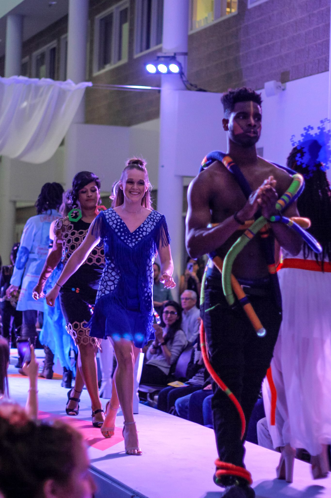
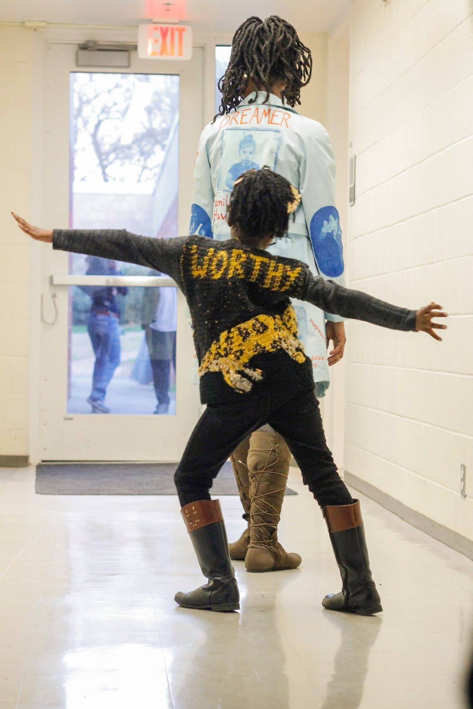
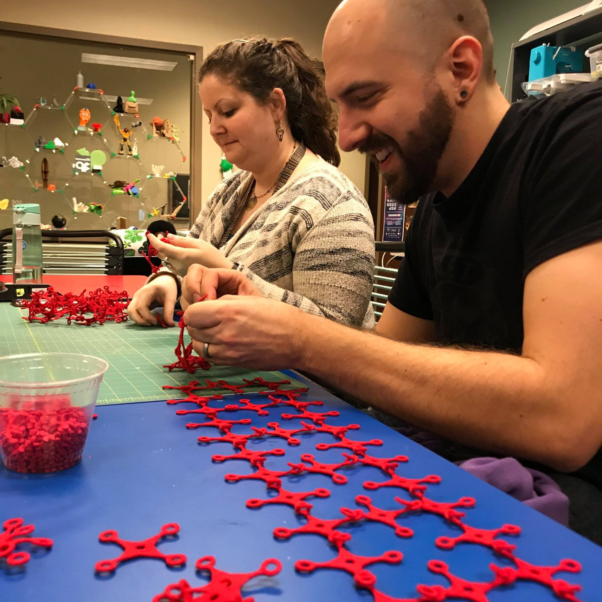

More than Just a Fashion Show
Statement Making is a campus wide digital fabrication fashion show featuring interdisciplinary collaborative design teams. The design teams consist of students from the Computer Science and Arts department at UNC-Charlotte. Come join us for a night of fashion, fabrication and inspiration!
 We are undergraduate and graduate students from the University of North Carolina at Charlotte. We want to make a statement and we want people to feel welcomed to join us. We learn as we go and we wouldn't change the process for nothing!
 Our statements are about Empowerment, Animal Rights, the Planet, LGBT rights and using technology for a better future. What's your statement?
 We create our pieces using technologies such as digital embroidery, synthetic fibers, 3D printer, lights, etc. We also advocate for Animal Rights and so we use synthetic fibers as well as recycled material.